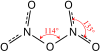

dinitrogen-pentoxide

Definition: Dinitrogen pentoxide (also known as nitrogen pentoxide or nitric anhydride) is the chemical compound with the formula N2O5. It is one of the binary nitrogen oxides, a family of compounds that only contain nitrogen and oxygen. It exists as colourless crystals that sublime slightly above room temperature, yielding a colorless gas.Dinitrogen pentoxide is an unstable and potentially dangerous oxidizer that once was used as a reagent when dissolved in chloroform for nitrations but has largely been superseded by nitronium tetrafluoroborate (NO2BF4).
Source: Wikipedia
Wikipedia Page (Something wrong with this association? Let us know.)
Wikidata Page (Something wrong with this association? Let us know.)